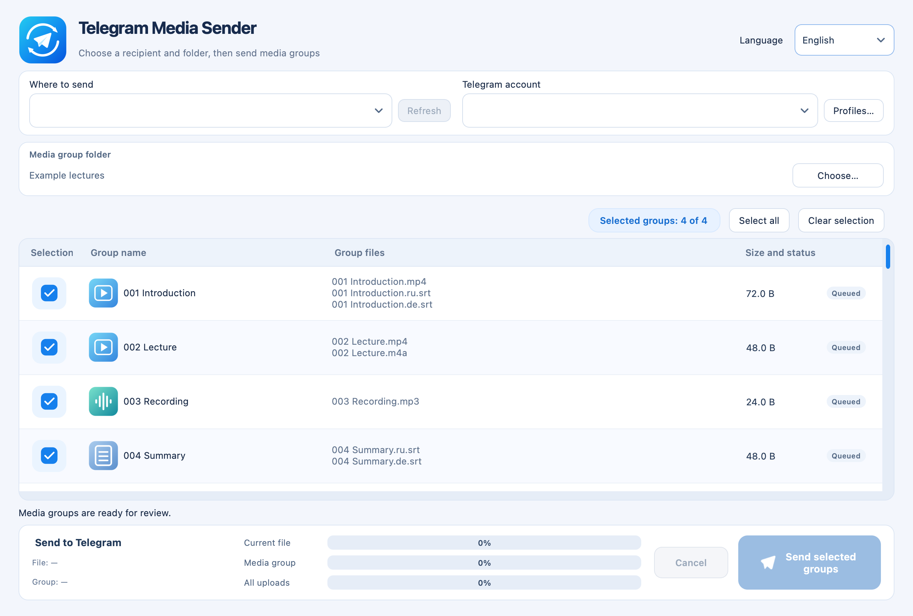

macOS 13+ · Apple Silicon
Telegram Media Sender
Send numbered bundles of video, audio and subtitles to Telegram in your chosen order.
Release · 1.1.2Before you startRequires your own Telegram account, API ID and API Hash; not notarized by Apple.


How it works
- Select files
- Set the order
- Send to Telegram
First steps
Extract the ZIP, move Telegram Media Sender.app to Applications and follow the guide to connect Telegram.